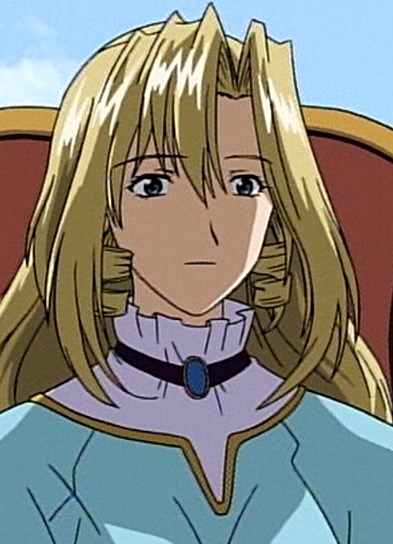

| |
Abby |
- Pokemon Advanced Generations
|
Abby is a Pokemon Doctor and Top Coordinater. She specializes in natural Pokemon medicine. She has a calm and collected attitude. |
| |
Aya |
|
Aya is a ninja and Pokemon Trainer. She is the younger sister of Koga. She has an interest in poetry and wants to learn Pokemon Jujitsu. |
|  |
Elmyr |
|
Elmyr is the Queen of the kingdom of Leinwan. She is the mother of Prince Forsythe and Pacifica. |
 |
Eri Ochiai |
|
Eri Ochiai is a famous actress who Mima admires who portrays the psychiatrist, in the drama series "Double Bind." |
 |
Kaho Mizuki |
- Cardcaptor Sakura
- Cardcaptor Sakura Movie 2: The Sealed Card
- Cardcaptor Sakura: Clear Card Prologue
- Cardcaptor Sakura: Clear Card
|
Kaho Mizuki is a shrine maiden and daughter of priest at a shrine. She is Sakura's substitute math teacher. She is nice young woman and has help Sakura with her mission. |
 |
Makoto Kino |
- Sailor Moon
- Sailor Moon R
- Sailor Moon R: The Movie
- Sailor Moon R: Make-Up! Sailor Senshi
- Sailor Moon S
- Sailor Moon S: The Movie
- Sailor Moon Super S: The Movie
- Sailor Moon Super S
- Sailor Moon Super S Plus: Ami's First Love
- Sailor Moon Super S Special
- Sailor Moon Sailor Stars
- Sailor Moon Sailor Stars: Hero Club
- Sailor Moon Memorial
- Sailor Moon R Memorial
- Sailor Moon S Memorial
- Sailor Moon Super S Memorial
- Sailor Moon Sailor Stars Memorial
|
Makoto Kino/Sailor Jupiter is a fourth Sailor Senishi. She can manipulate electriticity and use plat-based powers. She is an excellent cook and housekeeper. She might be physically strong and as killed fighter but she is sweet and kind. |
 |
Yu Fan Xia |
- Full Metal Panic! The Second Raid: Episode 00
- Full Metal Panic! The Second Raid
|
Yu Fan Xia is another Chinese-born assassin raised by Gauron. She is the eldest sister out of the twin. Yu Fan is a proficient Arm Slave pilot and an expect in unarmed combat. |